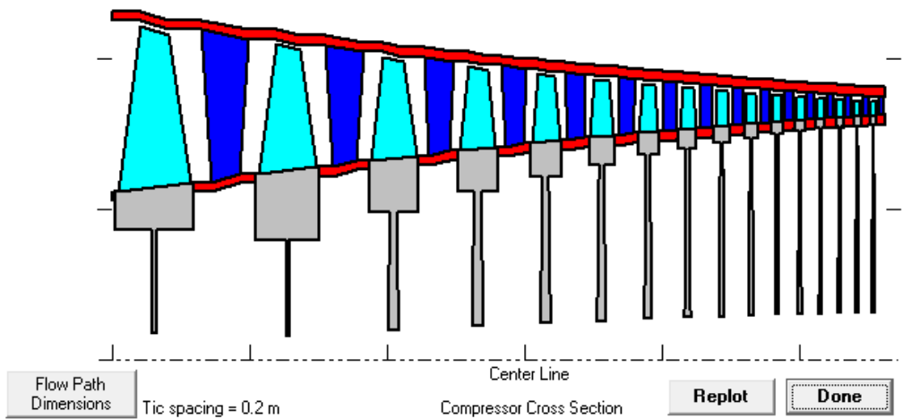

Aeroengine Design Project
Summary
A group of venture capitalists expressed interest in funding a network of small satellites to provide satellite internet coverage globally. They tasked our team with designing a low-cost rocket featuring a reusable first stage capable of deploying a single 1,000 kg satellite into a 500 km altitude low-Earth orbit (LEO). Key design requirements included delivering the payload efficiently, minimizing costs, and ensuring reusability of the first stage.
Aeroengine Design ReportSummary:
The AA 461 Airbreathing Propulsion project tasks student teams with designing a gas turbine engine core encompassing a compressor, combustor, and turbine. The focus lies on optimizing performance, managing costs, and adhering to specified mass flow rates under defined inlet conditions. Tools like COMPR, TURBN, and CEARUN aid in the analysis of compressor, turbine, and combustion processes.
Introduction and Background:
The project entails designing a gas turbine engine core for airbreathing propulsion, emphasizing performance optimization and maintaining acceptable turbine inlet temperatures. The compressor, combustor, and turbine collectively influence engine efficiency and emissions. Design decisions are justified based on efficiency, cost, and performance at the designated design point.
Compressor:
In the compressor design section, maximizing total compressor ratio while considering exit temperature and efficiency is crucial. Parameters like solidity, inlet angle, and number of stages significantly impact pressure and temperature behaviors. Analysis justifications involve equations for total efficiency, specific work, outlet temperature, and pressure.
Combustor:
The heart of the engine, the combustor, transforms fuel and air into high-temperature gases. Analysis involves selecting fuel type, combustion strategy, and equivalence ratio while maintaining temperature constraints. Plots depict temperature profiles, emissions levels, and pressure variations.
Turbine:
Efficient operation, cost minimization, and compressor-turbine matching are focal points in turbine design. Plots illustrate pressure, temperature, efficiency, work output, and mass flow rate across turbine stages. Considerations include work output, turbine efficiency, and mass flow rate calculations to ensure optimal turbine performance.
Aeroengine Design Project Conclusion:
The project provides insights into gas turbine engine core design and analysis, addressing specific requirements and constraints. Leveraging analytical tools and thorough evaluations, the project aims to enhance engine efficiency, performance, and cost-effectiveness.